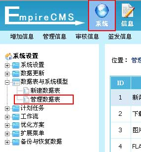
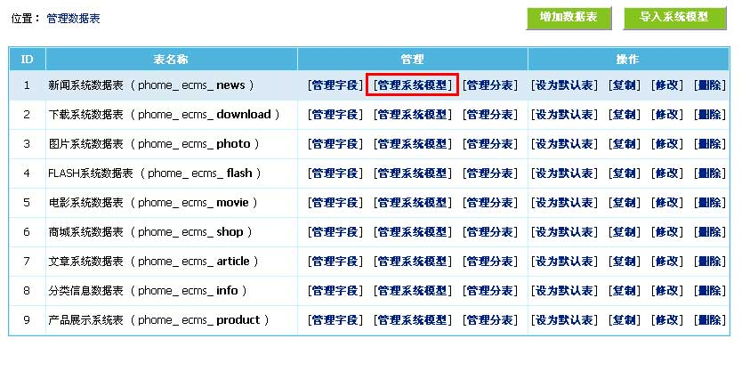
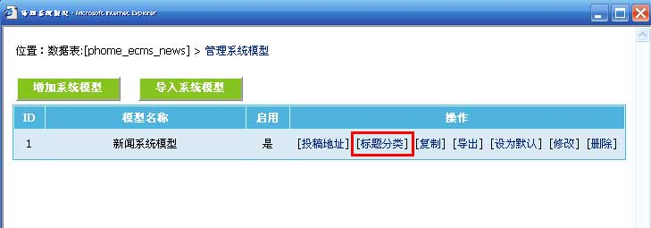
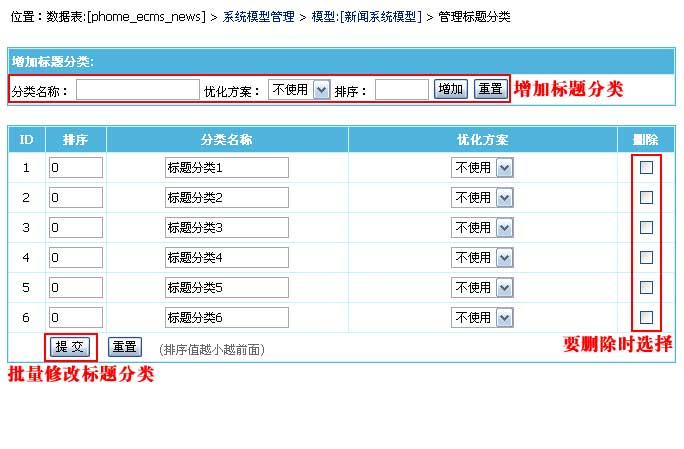
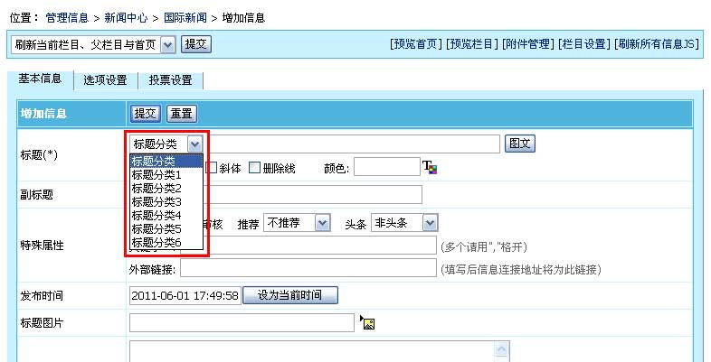
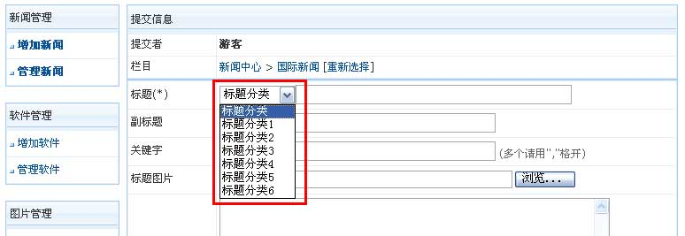
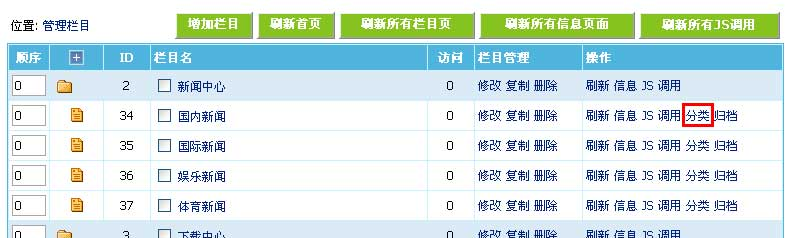
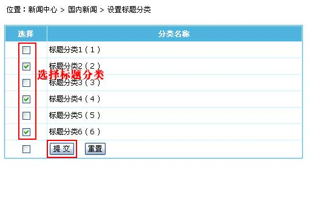
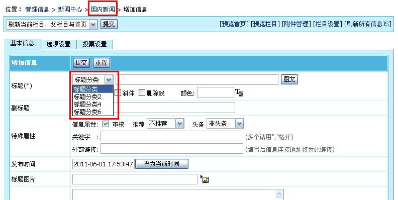

| 一、标题分类功能说明 |
| 帝国CMS在信息支持按专题、头条、推荐、字段等跨栏目调用相同的分类基础上，还加入了标题分类功能，使信息归类更多样化、更方便。例如：原先要增加头条、推荐以外的属性，一般要用增加专题的方式操作，而新版你也可以用增加标题分类的功能来增加分类属性，更多样化；再例如：供求系统中要选择“供应”、“需求”等信息类型，原来要用字段的结合项来实现，而新版你也可以用增加标题分类作为供求类型等等方式。
标题分类功能支持以下特性： |
| 二、标题分类调用说明 |
1、标签按标题分类调用： |
| 标签操作类型用如下： 25 标题分类最新信息 (栏目ID=标题分类ID) 26 标题分类点击排行 (栏目ID=标题分类ID) 27 标题分类推荐信息 (栏目ID=标题分类ID) 28 标题分类评论排行 (栏目ID=标题分类ID) 29 标题分类头条信息 (栏目ID=标题分类ID) 30 标题分类下载排行 (栏目ID=标题分类ID) |
2、标题分类的信息列表： |
| 可以链接到结合项页面：/e/action/ListInfo.php?ttid=标题分类ID&tempid=列表模板ID |
| 三、管理标题分类 | ||||||
| 1、登录后台，单击“系统”菜单，选择“管理数据表”子菜单，进入管理数据表界面： | ||||||
|  | ||||||
| 2、进入管理数据表界面，如下图： | ||||||
|  | ||||||
| 3、从管理数据表页面点击“新闻系统数据表”的“[管理系统模型]”，进入管理系统模型页面： | ||||||
|  | ||||||
| 4、从管理系统模型页面，点击“[标题分类]”，进入标题分类管理： | ||||||
|  | ||||||
|
||||||
| 5、增加标题分类后，增加/修改信息页面就可以选择我们增加的标题分类，如下图： | ||||||
|  | ||||||
| 6、默认前台投稿不显示标题分类选择，如果前台也要让会员选择，则按下面操作： | ||||||
| (1)、修改title字段的“投稿表单替换html代码”，加上显示选择标题分类如下代码： <?=$tts?"<select name='ttid'><option value='0'>标题分类</option>$tts</select>":""?> |
||||||
| (2)、修改后，查看前台投稿页面就可以看到标题分类选择，如下图： | ||||||
|  |
| 四、不同栏目设置不同的标题分类 |
| 1、登录后台>“栏目”>“栏目管理”>“管理栏目”，点击“分类”链接，进入栏目标题分类设置界面： |
|  |
| 2、进入栏目标题分类设置界面，如下图： |
|  |
| 3、栏目设置标题分类后，增加/修改信息页面就只可以选择我们设置的标题分类，如下图： |
|  |
| 相关链接 |
| 1、帝国CMS功能解密之新版结合项功能 |